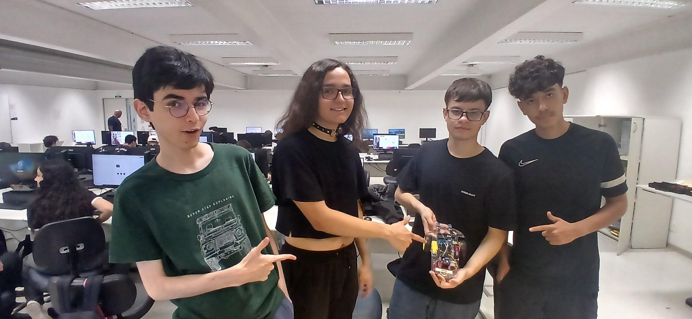

Imagem da equipe que tiramos após a finalização do carrinho.
Vídeo mostrando o carrinho em ação.
Usamos o conhecimento aprendido em aula sobre arduino, programação e componentes elétricos para montar um carrinho funcional que detecta a linha preta no chão para segui-la
Imagem da equipe que tiramos após a finalização do carrinho.
Vídeo mostrando o carrinho em ação.
Os materias não são tão bem organizados, como se pode ver na imagem, os materiais são jogados e colocados de forma aleatória.
A atividade do Boné inteligente consistia em usar nosso conhecimento sobre Arduino e criar um boné que detectasse a distância do usuário com a parede.
A atividade da maquete da casa consistiu em usar o arduino mais uma vez para programar uma porta de garagem que se abre ao apertar o botão "OK" do controle infra-vermelho
Imagem mostrando a casa com a porta fechada.
Imagem com a porta aberta.
Imagem que mostra que usamos controle infra vermelho para fazer funcionar.
Vídeo mostrando a casa funcionando.